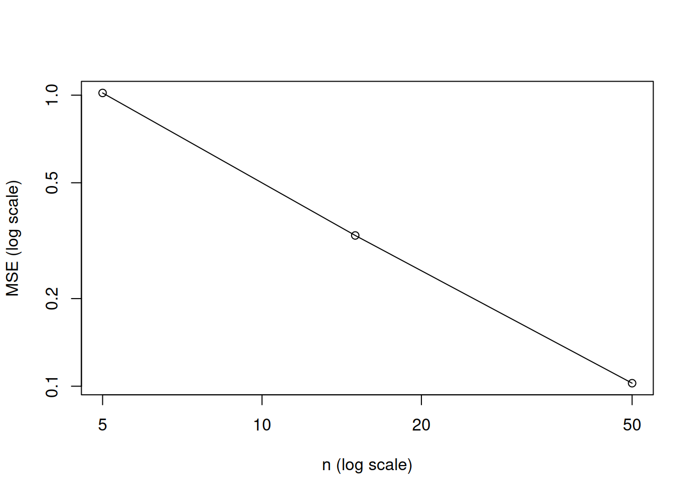

## Set seed for the random number generator to get reproducible results
set.seed(3)
## True parameter value ('theta' here 'mu')
mu <- 10
## Number of Monte Carlo repetitions:
B <- 10000
## Sequence of different sample sizes:
n_seq <- c(5, 15, 50)
## Function that generates estimator realizations
my_estimates_generator <- function(n){
X_sample <- rnorm(n = n, mean = mu, sd = sqrt(5))
## compute the sample mean realization
return(mean(X_sample))
}
estimates_mat <- cbind(
replicate(B, my_estimates_generator(n = n_seq[1])),
replicate(B, my_estimates_generator(n = n_seq[2])),
replicate(B, my_estimates_generator(n = n_seq[3]))
)
## Bias of the sample mean for different sample sizes n
MC_Bias_n_seq <- apply(estimates_mat, 2, mean) - mu
## Variance of the sample mean for different sample sizes n
MC_Var_n_seq <- apply(estimates_mat, 2, var)
## Mean squared error of the sample mean for different sample sizes n
MC_MSE_n_seq <- apply(estimates_mat, 2, function(x){mean((x - mu)^2)})4 Estimation Theory and Monte Carlo Simulations
Learning outcomes of this chapter:
- You know the basic concepts of estimation theory and you can apply them to specific estimators.
- You know how to use a Monte Carlo simulation to check the accuracy (bias, variance, and standard error) of a given estimator
4.1 Estimator vs. Estimate
Let’s assume that we have an iid random sample \(\{X_1,\dots,X_n\}\) with \[ X_i\overset{iid}{\sim} F_X \] for all \(i=1,\dots,n\), and let \[ \theta\in\mathbb{R} \] denote some parameter (e.g. the mean or the variance) of the distribution \(F_X\).
An estimator \(\hat\theta_n\) of \(\theta\) is a function of the random sample \(X_1,\dots,X_n\), \[ \hat\theta_n:=\hat\theta(X_1,\dots,X_n). \]
Since \(\hat\theta_n\) is a function of the random variables \(X_1,\dots,X_n\), the estimator \(\hat\theta_n\) is itself a random variable.
The observed data \[ X_{1,obs},\dots,X_{n,obs} \] is assumed to be a certain realization of the random sample \[ X_1,\dots,X_n. \] The corresponding realization of the estimator is called an estimate of \(\theta\) \[ \hat\theta_{n,obs}=\hat\theta(X_{1,obs},\dots,X_{n,obs}). \]
Examples:
The sample mean as an estimator of the population mean \(E(X_i) =\theta:\) \[ \hat\theta_n=\bar{X}_n=\frac{1}{n}\sum_{i=1}^nX_i \] For given data, we observe the realization \[ \hat\theta_{n,obs}=\bar{X}_{n,obs}=\frac{1}{n}\sum_{i=1}^nX_{i,obs} \]
The sample variance as an estimator of the population variance \(Var(X_i) =\theta:\) \[ \hat\theta_n=s_{UB}^2=\frac{1}{n-1}\sum_{i=1}^n\left(X_i - \bar{X}_n\right)^2 \] For given data, we observe the realization \[ \hat\theta_{n,obs}=s_{UB,obs}^2=\frac{1}{n-1}\sum_{i=1}^n\left(X_{i,obs} - \bar{X}_{n,obs}\right)^2 \]
Note
Often we do not use a distinguishing notation, but denote both the estimator \(\hat\theta_{n}\) and its realization \(\hat\theta_{n,obs}\) as \(\hat\theta_{n}\). This ambiguity is often convenient since both points of views can make sense in a given context. Sometimes, also the subscript \(n\) in \(\hat\theta_{n}\) is dropped and one simply writes \(\hat\theta.\)
4.2 Assessing the Quality of Estimators
Any reasonable estimator \(\hat\theta_n\) should be able to approximate the (usually unknown) parameter value \(\theta\), \[ \left(\text{random quantity}\right)\quad\hat\theta_n\approx\theta\quad\left(\text{deterministic parameter}\right), \] and the approximation should get better as the sample size increases, i.e. as \(n\to\infty\).
Statisticians/econometricians use different metrics to assess the quality of an estimator \(\hat\theta_n\). The most prominent metrics are:
- bias of an estimator \(\hat{\theta}_n\)
- variance and standard error of an estimator \(\hat{\theta}_n\)
- mean squared error (mse) of an estimator \(\hat{\theta}_n\)
If an estimator \(\hat\theta_n\) has no bias, i.e. if \[ \operatorname{Bias}\left(\hat\theta_n\right)=E\left(\hat\theta_n\right) - \theta=0 \] for all \(\theta\in\mathbb{R}\) and all sample sizes \(n,\) we call it an unbiased estimator.
Many modern estimators are not unbiased. However, every estimator should be at least asymptotically unbiased, i.e. \[ \lim_{n\to\infty}\operatorname{Bias}\left(\hat\theta_n\right)=0 \] for all \(\theta\in\mathbb{R}.\)
We would like to have estimators \(\hat\theta_n\) with a small (or zero) bias.
If the bias of an estimator \(\hat\theta_n\) is small (or zero), we know that the distribution of the estimator \(\hat\theta_n\) is roughly (or exactly) centered around the true (usually unknown) parameter \(\theta.\)
However, also unbiased estimators \(\hat{\theta}_n\) may still vary a lot around the parameter \(\theta\) to be estimated. Therefore, is is also important to assess the variance (or the standard deviation) of the estimator.
We would like to have estimators with a small as possible variance/standard error.
The variance (and thus also standard error) should decline as the sample size increases, such that \[ \lim_{n\to\infty}Var\left(\hat\theta_n\right)=0. \]
To combine bias and variance into one metric, one typically uses the Mean Squared Error (MSE) of an estimator \(\hat\theta_n.\)
We would like to have estimators with a small as possible mean squared error, and the mean squared error should decline as the sample size increases, such that \[ \lim_{n\to\infty}\operatorname{MSE}\left(\hat\theta_n\right)=0. \]
The following holds true:
- The mean squared error equals the sum of the squared bias and the variance:
\[ \operatorname{MSE}\left(\hat\theta_n\right) = \left(\operatorname{Bias}\left(\hat\theta_n\right)\right)^2 + Var\left(\hat\theta_n\right) \]
- For unbiased estimators (i.e. \(E(\hat\theta_n)=\theta\)) the mean squared error equals the variance, i.e.
\[ \underbrace{E\left[\left(\hat\theta_n - \theta\right)^2\right]}_{\operatorname{MSE}\left(\hat\theta_n\right)} = \underbrace{E\left[\left(\hat\theta_n - E\left(\hat\theta_n\right)\right)^2\right]}_{ Var\left(\hat\theta_n\right)} \]
4.3 Approximating Bias, Variance, and MSE using MC Simulations
Any of the the above assessment metrics requires us to compute means, i.e. \(E(\cdot)\), of random variables:
For the \(\operatorname{Bias}\left(\hat\theta_n\right)\) we need to compute \(E\left(\hat\theta_n\right)-\theta\)
For the \(Var\left(\hat\theta_n\right)\) we need to compute \(E\left[\left(\hat\theta_n - E(\hat\theta_n)\right)^2\right]\).
For the \(\operatorname{MSE}\left(\hat\theta_n\right)\) we need to compute \(E\left[\left(\hat\theta_n - \theta\right)^2\right]\).
We can use a Monte Carlo (MC) simulation to approximate these means by sample means using the law of large numbers which states that a sample mean over iid random variables is able to approximate the population mean of these random variables as the number of random variables to average over gets large (see Theorem 7.5 in Chapter 7).
The core part of a MC-simulation generates a large number of \(B\) (e.g. \(B=10,000\)) many realizations of \(\hat{\theta}_n\) for
- a given sample size \(n\) and
- a given data distribution \(F_X.\)
We can use the above core part of the MC-Simulation algorithm to generate \(B\) many realizations of the estimator \(\hat{\theta}_n\) \[ \hat{\theta}_{n,1,obs},\dots,\hat{\theta}_{n,B,obs} \] which allow us to compute the following MC-approximations based on sample means over the generated \(B\) realizations of \(\hat\theta_n\):
- The bias of \(\operatorname{Bias}\left(\hat\theta_n\right)=E\left(\hat\theta_n\right)-\theta\) can be approximated by
\[ \widehat{\operatorname{Bias}}_{MC}\left(\hat\theta_n\right) = \left(\frac{1}{B}\sum_{b=1}^B \hat\theta_{n,b,obs}\right) - \theta \]
The variance \(Var\left(\hat\theta_n\right)=E\left[\left(\hat\theta_n - E(\hat\theta_n)\right)^2\right]\) can be approximated by \[ \widehat{Var}_{MC}\left(\hat\theta_n\right) = \frac{1}{B}\sum_{b=1}^B \left(\hat\theta_{n,b,obs} - \left(\frac{1}{B}\sum_{b=1}^B \hat\theta_{n,b,obs}\right)\right)^2 \]
The mean squared error \(\operatorname{MSE}\left(\hat\theta_n\right)=E\left[\left(\hat\theta_n - \theta\right)^2\right]\) can be approximated by \[ \widehat{\operatorname{MSE}}_{MC}\left(\hat\theta_n\right) = \frac{1}{B}\sum_{b=1}^B \left(\hat\theta_{n,b,obs} - \theta\right)^2 \]
Note
By the law of large numbers (see Theorem 7.5 in Chapter 7) these approximations get arbitrarily precise as \(B \to \infty,\) i.e. \[ \begin{align*} \widehat{\operatorname{Bias}}_{MC}\left(\hat\theta_n\right)&\to_p \operatorname{Bias}\left(\hat\theta_n\right)\quad\text{as}\quad B\to\infty\\[2ex] \widehat{Var}_{MC}\left(\hat\theta_n\right)&\to_p Var\left(\hat\theta_n\right)\quad\text{as}\quad B\to\infty\\[2ex] \widehat{\operatorname{MSE}}_{MC}\left(\hat\theta_n\right)&\to_p \operatorname{MSE}\left(\hat\theta_n\right)\quad\text{as}\quad B\to\infty \end{align*} \]
So for large \(B\) (e.g. \(B=10,000\)) we can consider \[ \widehat{\operatorname{Bias}}_{MC}(\hat\theta_n), \widehat{Var}_{MC}(\hat\theta_n),\text{ and }\;\; \widehat{\operatorname{MSE}}_{MC}(\hat\theta_n) \] as roughly equal to \[ \operatorname{Bias}(\hat\theta_n), Var(\hat\theta_n),\text{ and } \operatorname{MSE}(\hat\theta_n). \]
4.4 Example: Sample Mean
The following R code contains a Monte Carlo simulation with \(B = 10000\) replications to approximate the bias, the variance, and the mean squared error for the sample mean \[
(\hat\theta_n=)\bar{X}_n=\sum_{i=1}^nX_i
\] Setup:
- \(X_i\overset{iid}{\sim}F_X\), \(i=1,\dots,n\), with \(F_X=\mathcal{N}(\mu,\sigma^2)\)
- Mean \(\mu=10\)
- Variance \(\sigma^2=5\)
- Sample sizes \(n\in\{5,15,50\}\)
Table 4.1 shows the Monte Carlo approximations for the bias, the variance, and the mean squared error of \(\bar{X}_n.\)
| n | Bias (MC-Sim) | Variance (MC-Sim) | MSE (MC-Sim) |
|---|---|---|---|
| 5 | -0.001 | 1.02 | 1.02 |
| 15 | 0.000 | 0.33 | 0.33 |
| 50 | 0.001 | 0.10 | 0.10 |
The Monte Carlo approximations in Table 4.1 indicate that:
The bias \(\operatorname{Bias}(\bar{X}_n)\) is effectively zero for all sample sizes \(n\in\{5,15,50\}\)
The mean squared error \(\operatorname{MSE}(\bar{X}_n)\) is decreasing as the sample size \(n\) gets larger.
The log-log plot in Figure 4.1 suggests a convergence rate of \(-1\) for \(\operatorname{MSE}(\bar{X}_n)\) i.e. \[ \begin{align*} \operatorname{MSE}(\bar{X}_n) &= \texttt{Constant} \cdot n^{-1}\\[2ex] \Leftrightarrow\log\left(\operatorname{MSE}(\bar{X}_n)\right) &= \log\left(\texttt{Constant}\right) -1 \cdot \log\left(n\right), \end{align*} \] where \(\texttt{Constant}\) depends only on the data generating process and the estimator.
plot(y = MC_MSE_n_seq,
x = n_seq,
type = "o",
log = "xy",
ylab = "MSE (log scale)",
xlab = "n (log scale)")
## Slope:
(log(0.1) - log(1)) / (log(50) - log(5))[1] -1
